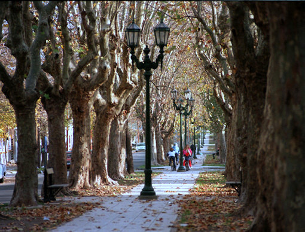

Program

2nd EULASUR SUMMER SCHOOL and WORKSHOP PROGRAMME
Sunday, 4th September
Monday, 5th September
9:30h Hybrid Materials: an overview (Auditorium)
10:30h COFFEE BREAK 11:00h Introduction to atomistic simulation methods and freely available tools (Auditorium)
12:30h LUNCH
14:30h-17:00h Innovation Workshop project exercises by Copenhagen Business School (Room A) 15:15h Theory and simulations of magnetoelectric materials (Auditorium)
16:30h COFFEE BREAK 17:00h Poster presentations
Tuesday, 6th September
9:00h Monte Carlo methods for disordered systems (Auditorium)
10:00h Simulation of electronic properties at the nanoscale (Auditorium)
11.00h COFFEE BREAK 11:30h Ferroelectric materials: key functionalities and recent advances (Auditorium)
12.30h LUNCH 14:00h TEM characterization for nanomaterials (Auditorium)
14:30h-17:30hs Innovation Workshop project exercises by Copenhagen Business School (Room A)
15:00h Solid state NMR (Auditorium)
16:00h COFFEE BREAK 16.30h Oxyfluorides and superconductivity (Auditorium)
17:30h Poster presentations
Wednesday, 7th September
9.00h Material characterization by X-ray crystallography (Auditorium)
9:00h-11:00hs Innovation Workshop project exercises by Copenhagen Business School (Room A)
10.00h Soft Materials Characterization Using Synchrotron Radiation Techniques (Auditorium)
11.00h COFFEE BREAK 11:30h Informal meeting: interchange Programs for Students (Auditorium)
12.30h LUNCH
Free Afternoon
Thursday 8th September
9.00h Methodological advances in powder diffraction (Auditorium)
10:00h Non-linear optics methods with femtosecond lasers (Auditorium)
11.00h COFFEE BREAK 11.30h Order-Disorder Interplay in the High Energy Optical Response of 3D Photonic Crystals (Auditorium)
12.30h LUNCH
14:00h How can luminescence give information on material structure? (Auditorium)
14:30h-17:30hs Innovation Workshop project exercises by Copenhagen Business School (Room A)
15:00h Raman scattering as a probe of ferroelectric order and excitations in nanostructures (Auditorium)
16.00h COFFEE BREAK 16.30h Scanning near-field microscopy: Fundamentals & applications (Auditorium)
17:30h Poster presentations
20:30h GALA DINNER
Friday 9th September-09
9:00h Advances in EULASUR WP3 activities (Auditorium)
10:00h Technology transfer processes (Auditorium)
11.00h COFFEE BREAK 11:30h Tolket: the missing link (Auditorium)
12.30h LUNCH 14:00h Results of Innovation Project Exercises (Auditorium)
15.00h Round Table and Conclusions (Auditorium)
|
|---|